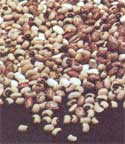
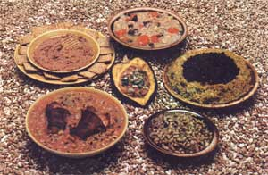

There's an icy snap and tingle in the air right now . . . especially up in the wintry state of Vermont. "We don't mind, though," says Anne C. Pratt of Plainfield. "Not as long as we have a steamy plate of savory, filling beans on the table. And the price is right too!"
It seems that every family-whether already "scratching it out" down on the farm, living in the city and saving pennies to move to the country too, or just trying to make ends meet in today's high-priced world-is interested in cutting its cost of living.
My husband and I are no exception. And, as millions of other families have done for centuries, we frequently cut our living expenses (while still enjoying hearty, nourishing, stick-to-the-ribs meals) by cooking with beans. And, nope, we never eat the chemical-packed "beans and franks" and other "heat and serve" frozen and canned abominations that line the supermarket shelves. (For one thing, the fat-laden, preservative-and dyelaced, artificially flavored "things" currently sold by the "food" industry as "frankfurters" aren't even allowed in our house.)
Instead, we feast on a variety of zesty, cook-em-from-the-ground-up main dishes that make beans the stars of a good many cold weather Pratt lunches, dinners ... even snacks. We just never seem to get tired of beans around our place, and I always get a big kick out of whipping a few pennies' worth of the legumes (instead of a couple of dollars' worth of meat) into a satisfying meal.
(And if you didn't know it before, I'll tell you now that legumes-when cooked up in combination with grains-can provide all the usable protein your body needs. If you'd like to learn more about that, take a look at Frances Moore Lappe's eyeopening book, Diet for a Small Planet, available at any good bookstore or from Mother's Bookshelf.)
Technically, I think these little fellows are supposed to be called black-eyed beans ... but nobody does, and I like it better the other way anyhow. Whatever, they're delicious when 3/4 cup of the soaked (see sidebar with this article) peas are simmered in 2-1/2 cups of water for an hour and a half. Then, just before they're done, add a tablespoon of brown sugar or molasses, a dash of Worcestershire sauce, and some salt, sauteed onions and garlic to taste. Yummmy! It's simple, but this dish (which serves two) is so good my mouth is watering right now.
If you eat meat and like soul food, here's another way to prepare black-eyed peas that'll have'em askin' for seconds: Simmer 1 cup of the soaked peas with ham hocks (or a ham bone), 1 cup of tomato puree, a diced onion, and 2 sliced stalks of celery in enough water to cover everything. Season with garlic, red pepper, and bay leaf ... and salt to taste after the peas are tender.
Serves four ... but, on a nippy winter's day, just barely. Better fix extra!
One type of bean or another goes together with barley so well that almost everyone I know has a recipe which combines the two. This one (which was handed down to me from my grandma) is best when made with a stock of beef short ribs and onions ... but a vegetable stock is all right too.
Boil 1/2 cup of dried baby white limas in a quart of soup stock for about half an hour ... then add 2/3 cup of barley and continue to simmer the mixture for 20 minutes. Add 3 sliced carrots and 1/2 pound of mushroom pieces (I prefer fresh mushrooms), and simmer the increasingly savory brew for 20 minutes more. Finally, finish off this mid-winter nectar by plopping in the meat from the short ribs (if you used them) and salting and peppering to taste. This soup is great today and even better tomorrow. Serves four.
Wash 1/2 cup of black beans (they're sometimes called "black turtle beans"), soak' em overnight in two cups of water, and then boil 'em in the same water. After they've bubbled for a half hour, start cooking up 3/4 cup of brown rice with 1 teaspoon of curry powder in 2 cups of water in another saucepan. At the same time, in a separate heavy frying pan, begin to saute three stalks of chopped celery and 1 very large, coarsely diced onion.
Keep the beat under the frying pan very low and stir the vegetables often. If you have fresh ginger and garlic, you can mince a bit of each (or smash 'em together with a mortar and pestle) and add them to the celery and onion. If you don't have either, figure on putting a little extra curry powder in the rice (add some, cook awhile, taste, and so on ... until the strength of the powder matches the strength of your tongue).
Now cut up some dried apricots and add them to the rice (you may need to add some extra water to the rice, too, before it's done). When the beans and rice are both fully cooked and have absorbed all the water in their pans, add them to the vegetables. Sprinkle in more curry powder (if needed), salt to taste, and serve these beans immediately (or they'll turn everything they touch black). This dish feeds four.
Cut two large acorn squash in half and clean out the seeds. Then slice the end off each half, so it'll stand-scooped-out side up-without assistance ... and steam the squash for five minutes on a rack in a pressure cooker, or for 25 minutes in a covered pan.
Now mix 2 cups of still-hot, cooked kidney beans with 1 cup of sauteed, diced onion, carrot, celery, cabbage, or whatever vegetable you happen to have around the house. Add 3/4 cup of grated cheese. (We use nothing but Vermont cheddar, of course, since we live in Vermont but almost any cheese that's hard enough to grate should work. Cottage cheese is good, too, and you don't even have to grate it!) Season with salt, pepper, and the herbs of your choice (I like garlic powder and a tiny bit of thyme), fill the cooked squash halves with the mixture, and bake the stuffed halves for 15 to 20 minutes in a moderate (about 35°F) oven.
When I pull these steamy delights from the oven, I usually sprinkle some shredded scallions across their tops and put 'em right on the table. The recipe serves four and, with only a little imagination, you can adapt the dish to almost anything you have to work with in the kitchen. Stuff the squash with rice, bulgur, bread crumbs, other types of beans, almost any vegetable, endless combinations of herbs and spices, green peppers, cabbage leaves, tomatoes ... even other kinds of squash! They're all good.
Mash 1 cup of cold, cooked (it helps if they're overcooked) kidney beans. Add 1 tablespoon of mayonnaise, 1 teaspoon of salt, 1 teaspoon of chili powder (more or less, depending on your taste), and a dash of garlic powder. Chili and serve as a dip for crackers or carrot and celery sticks. Delicious And you thought kidney beans were only good for chili!
Legumes of any kind will cook much faster if you soak them overnight first. And if you forget to set them out the night before you want to whip up one of these dishes ... boil your beans for five minutes, cover them tightly, and let them steep for an hour in the cooling water. That'll tenderize the little critters almost as well as a full night's presoak.
A pressure cooker is the best weapon you'll ever have it you want to wage war on food preparation fuel consumption. Get one if you don't already have one ... and study the instruction booklet that comes with it. The cooker can save you a lot of time and money.
Beans have a great deal more flavor when simmered in stock, rather than plain water. Stock is simply the liquid that's left over after bones, meat scraps, and/or vegetables have been boiled or simmered. It has many variations, all of which are filled with vitamins and minerals that might otherwise have been thrown out or dumped into the compost heap. Any basic cookbook will give you detailed instructions for the preparation of stock, if you don't know how.
For every cup of beans that you intend to cook, add 2 to 4 cups of water (or stock). You may have to add more later if the original liquid disappears before the legumes are done. Presoaked pinto beans usually must simmer for 1 to 2 hours in a partially covered pan before they're done. Kidney, marrow, black beans, black-eyed peas, and split peas are generally finished in an hour and a half. Lentils only take 45 minutes to an hour and soybeans and chickpeas (also known as garbanzo beans) cook the slowest of all ... figure on giving them plenty of time.
If you're planning a dish that calls for pureed or mashed beans, cook 'em longer and add more water as it's needed. And never add salt to any pot of beans until they're tender ... or they'll likely never get that way.-AP.
|
 |
 |
|